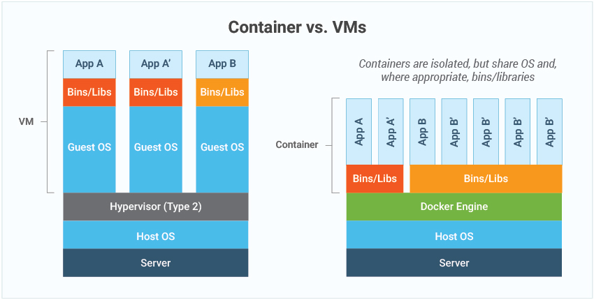

Sumber: incredibuild.com
Ada dua istilah yang sering terucap oleh mereka yang menggeluti dunia cloud computing, yaitu virtualisasi dan kontainerisasi. Ada pula sebutan virtual machine, Docker, dan Kubernetes. Makhluk seperti apa mereka ini?
Berikut ini saya jelaskan secara kronologis, dimulai dari definisi komputasi awan, virtualisasi, kontainerisasi, Docker, hingga berakhir di Kubernetes.
Komputasi Awan
Awan adalah metafora internet. Oleh karenanya, komputasi awan adalah komputer dan segala macam jaringan serta infrastruktur IT yang berada di internet. Isitlah awan juga merupakan abstraksi dari suatu sistem kompleks yang disembunyikan. Instagram, Gojek, Bukalapak, Spotify, dan Netflix, semua data dan code-nya tidak berada di masing-masing perangkat kita, melainkan berada di internet.
Komputasi awan memungkinkan pemilik Instagram, Gojek, dan aplikasi lainnya, untuk menggunakan sumber daya komputer secara on-demand dan hanya bayar sesuai penggunaan. On-demand berarti sumber daya boleh diubah sesuka hati. Hari ini RAM server 8 GB, besoknya diubah jadi 16 GB. Bandingkan dengan zaman dulu, di mana pemilik aplikasi menyewa server fisik dengan spesifikasi yang tidak mudah diubah karena ada “masa kontraknya”. Selain itu, biaya sewa juga selalu sama, meskipun penggunaan sumber dayanya sedang rendah.
Beberapa contoh penyedia layanan komputasi awan yang populer yaitu Google Cloud Platform, Amazon Web Services, Microsoft Azure, IBM Cloud, Alibaba Cloud, dan Oracle Cloud Infrastructure.
Sumber: miro.medium.com
Virtualisasi
Dahulu, aplikasi disimpan di server fisik. Ada kalanya aktivitas dan jumlah pengguna berubah fluktuatif meningkat dan menurun. Agar dapat menampung jumlah pengguna yang semakin banyak, server harus ditingkatkan spesifikasinya yang mencakup CPU, RAM, dan harddisk. Butuh waktu berjam-jam bahkan hitungan hari untuk menyelesaikannya.
Hingga akhirnya komputer virtual (disebut juga VM atau virtual machine) lahir, memulai masa virtualisasi. Sederhananya, komputer VM (guest) dijalankan di atas komputer lain (host). VM ini punya sistem operasinya sendiri. Perangkat keras komputer host diambil sebagian secara virtual untuk diberikan ke VM. Satu komputer host bisa menjadi inang bagi banyak VM.
Teknologi ini tentu lebih cepat daripada server fisik. Spesifikasi dapat diubah hanya dalam hitungan detik. Perubahan hanya bermodalkan klik, geser, atau bentuk interaksi lainnya di peramban. Tidak perlu lagi datang ke data center, narik kabel, colok sana colok sini.
Sumber: eginnovations.com
Kontainerisasi
Manusia memang tidak pernah puas. Virtualisasi masih dianggap lambat. Bayangkan begini, developer Gojek baru saja selesai membuat fitur baru, suatu fitur “pesan sekarang, pakai nanti” (eh, sudah ada belum ya?). Anggap saja belum. Fitur ini masih di environment staging dan akan di-deploy ke environment production. Artinya, fitur ini masih ada di internal mereka, belum dirilis ke publik, ke kita-kita ini.
Seperti yang telah dijelaskan di tiga paragraf sebelumnya, VM adalah komputer nyata namun virtual. Ia berisi sistem operasi lengkap, aplikasi, dan konfigurasi serta dependency dari aplikasi itu sendiri. Proses deploy ke production, yaitu proses mengganti versi yang lama dengan yang baru, akan memakan waktu beberapa menit, setengah jam, atau bahkan sejam lebih.
Hingga akhirnya kontainerisasi lahir. Sebuah kontainer jauh lebih ringan, ekonomis, dan skalabel dibandingkan dengan VM. Adanya kontainerisasi membuat aplikasi, entah itu frontend, backend, dan database, menjadi lebih terisolasi di dalam kontainernya masing-masing. Tidak bergantung pada host-nya sehingga mudah dipindah-pindah.
Sumber: eginnovations.com
VM dan Kontainer dianalogikan sebagai rumah dan unit apartemen. Sumber: lukewilson.net
Kontainer hanya berisi aplikasi, konfigurasi, dan dependency-nya saja. Tidak heran ukurannya hanya dalam hitungan MB, alih-alih VM yang berukuran sekian GB. Proses deploy menjadi jauh lebih cepat. Jika setelah deploy ternyata ada bug atau error, aplikasi juga akan lebih cepat di-rollback untuk mengembalikan ke versi sebelumnya. Coba bandingkan dengan VM dan server fisik, pengguna mungkin sudah keburu teriak-teriak di media sosial.
Perbandingan arsitektur tradisional vs virtual vs kontainer. Sumeber: kubernetes.io
Docker
Docker adalah salah satu perangkat lunak yang memungkinkan aplikasi dapat dikemas ke dalam bentuk paket yang disebut kontainer. Bagaimana kontainer dibuat? Apa yang harus saya mulai sebagai developer? Singkatnya begini:
1. Code - Buat cetak biru dari sebuah image. Cetak biru ini berupa file bernama Dockerfile. File ini mendefinisikan base image, dependency, dan default command. Isi Dockerfile kurang lebih seperti ini.
1
2
3
4
5
6
7
8
9
FROM node:alpine
WORKDIR '/app'
COPY package.json .
RUN npm install
COPY . .
CMD ["npm","start"]
2. Build - Jalankan perintah docker build untuk membuat image.
3. Push - Unggah image ke server, baik secara langsung atau melalui registry (contohnya Docker Hub) menggunakan perintah docker push.
4. Run - Jalankan kontainer berdasarkan image yang telah dibuat untuk menggantikan kontainer yang lama. Jalankan serangkaian perintah docker pull, docker stop, dan docker run.

Cara di atas hanya salah satu dari sekian cara yang tersedia. Banyak jalan menuju Roma.
Kubernetes
Bayangkan sebuah pertunjukan orkestra. Meski terdiri dari puluhan hingga ratusan musisi, pertunjukan musik tetap berjalan lancar dan seirama. Tidak ada yang temponya lebih cepat, tidak ada juga yang lebih lambat.
Sekarang, bayangkan kita telah men-deploy ratusan kontainer ke production. Akan sangat rumit jika seluruh aktivitas per-kontainer-an masih diajalnkan secara manual. Misalnya saja jika mengikuti workflow Docker yang saya jabarkan sebelumnya, di poin ke-4, aplikasi akan mengalami downtime. Pengguna tidak akan dapat mengakses aplikasi selama proses deploy tersebut.
Inilah peran Kubernetes, yaitu sebagai orkestrator kontainer yang melingkupi computing, networking, dan storage. Kubernetes memastikan segala sesuatunya berjalan baik. Kubernetes juga mengambil alih pekerjaan yang tidak seperlunya kita lakukan seperti menskalakan aplikasi ketika sedang ramai pengguna, menambah atau mengurangi jumlah node tiap kali kehabisan sumber daya perangkat keras, dan 1001 hal lainnya. Semua berjalan secara mulus dalam hitungan detik tanpa mematikan aplikasi.
Kita hanya cukup mendifinisikan apa saja yang kita inginkan di dalam satu set file konfigurasi. Paradigma yang digunakan ketika menggunakan Kubernetes adalah deklaratif alih-alih imperatif.
Arsitektur
Arsitektur Kubernetes. Sumeber: cncf.io
Flow komunikasi tiap komponen Kubernetes. Sumeber: kubernetes.io
Flow komunikasi antara master dan node
Terminologi
Pod ― adalah objek terkecil yang dapat kita buat di Kubernetes. Ia adalah tempat di mana kontainer berjalan. Pod terdiri dari satu atau lebih kontainer.
Node (worker node) ― adalah mesin, baik fisik maupun virtual, yang merupakan worker machine tempat di mana pod berada. Node terdiri dari satu atau lebih pod.
Kluster ― adalah sekumpulan node yang dikelompokkan bersama. Dengan cara ini bahkan jika satu node mati, aplikasi masih dapat diakses melalui node lain.
Master (control plane) ― bertanggungjawab dalam mengelola semuanya. Beberapa contohnya yaitu menyimpan informasi mengenai klsuter, memonitori node, dan pemindahan beban kerja dari node yang mati ke node lain.
Container runtime ― adalah perangkat lunak yang harus ada agar kontainer dapat berjalan. Pada gambar ke-2 di atas, container runtime menggunakan Docker. Selain Docker, ada banyak pilihan lain seperti Containerd dan CRI-O.
Instal Kubernetes
Kubernetes bisa dijalankan di local machine (laptop atau desktop) dengan berupa single-node cluster. Saya menyarakan menggunakan Docker Desktop karena Docker sudah menyediakan Kubernetes. Cukup ke menu Pengaturan, submenu Kubernetes, klik Enable Kubernetes. Silahkan lihat bagaimana cara menginstal Docker di sini terlebih dahulu.

Selain local machine, khususnya untuk keperluan production, Kubernetes dijalankan sebagai managed di penyedia layanan komputasi awan. Beberapa contohnya seperti GKE (Google Kubernetes Engine) dan EKS (Amazon Elastic Kubernetes Service).
Bacaan Lanjutan
- Bagaimana Cara Men-deploy aplikasi di Kubernetes di Lokal (Laptop)?
- Bagaimana Cara Men-deploy aplokasi di Kubernetes di Google Cloud Platform (GKE)?